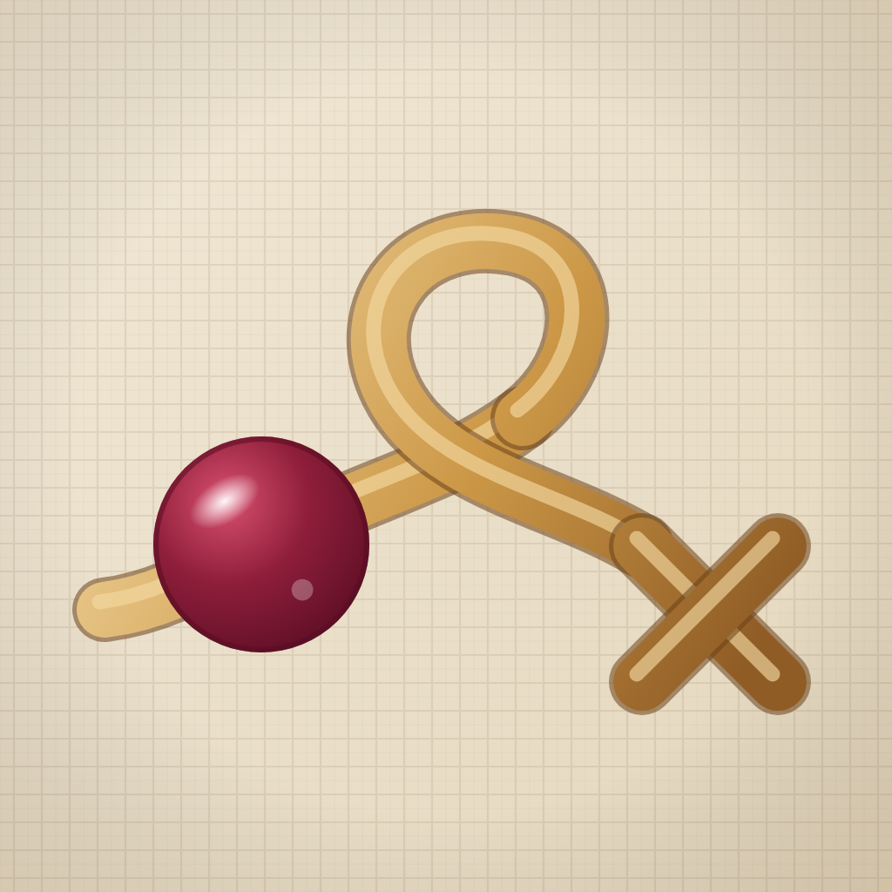
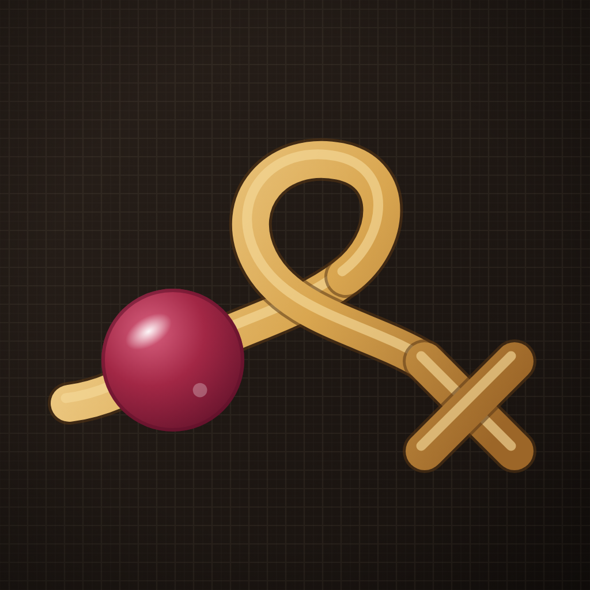
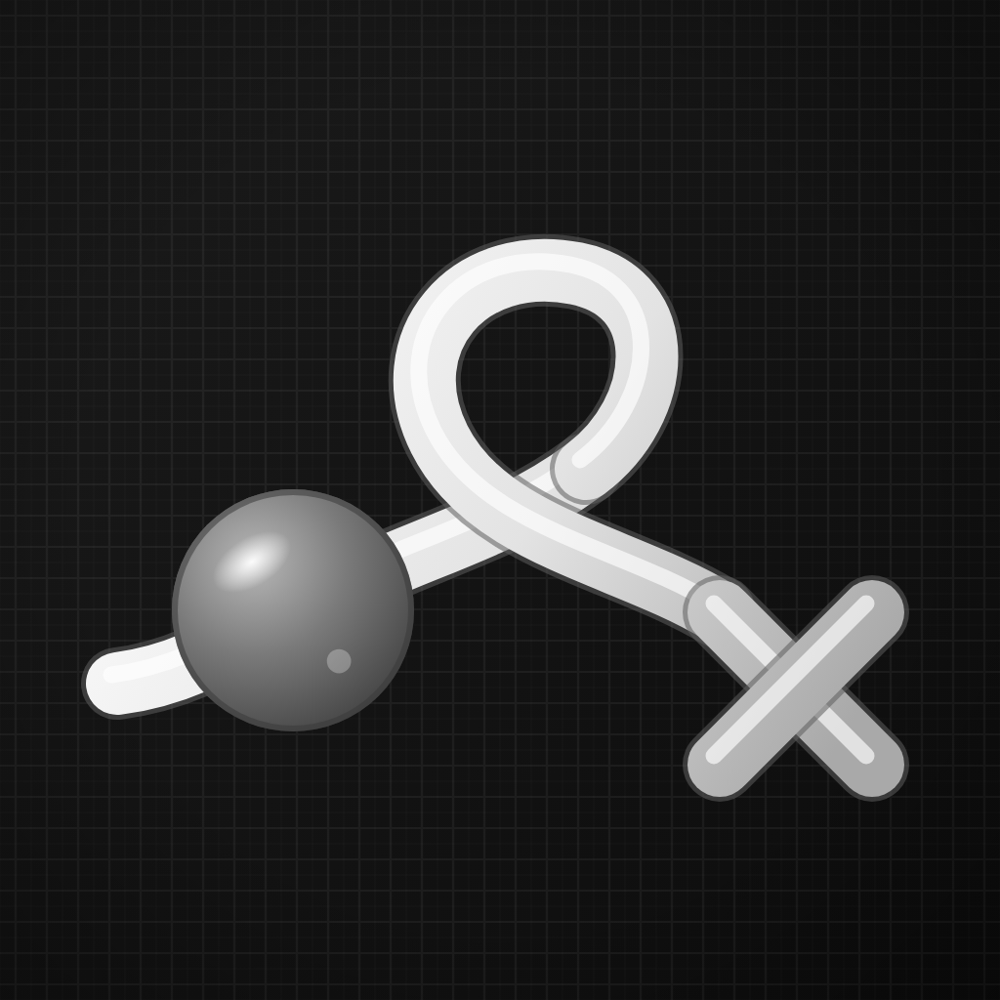
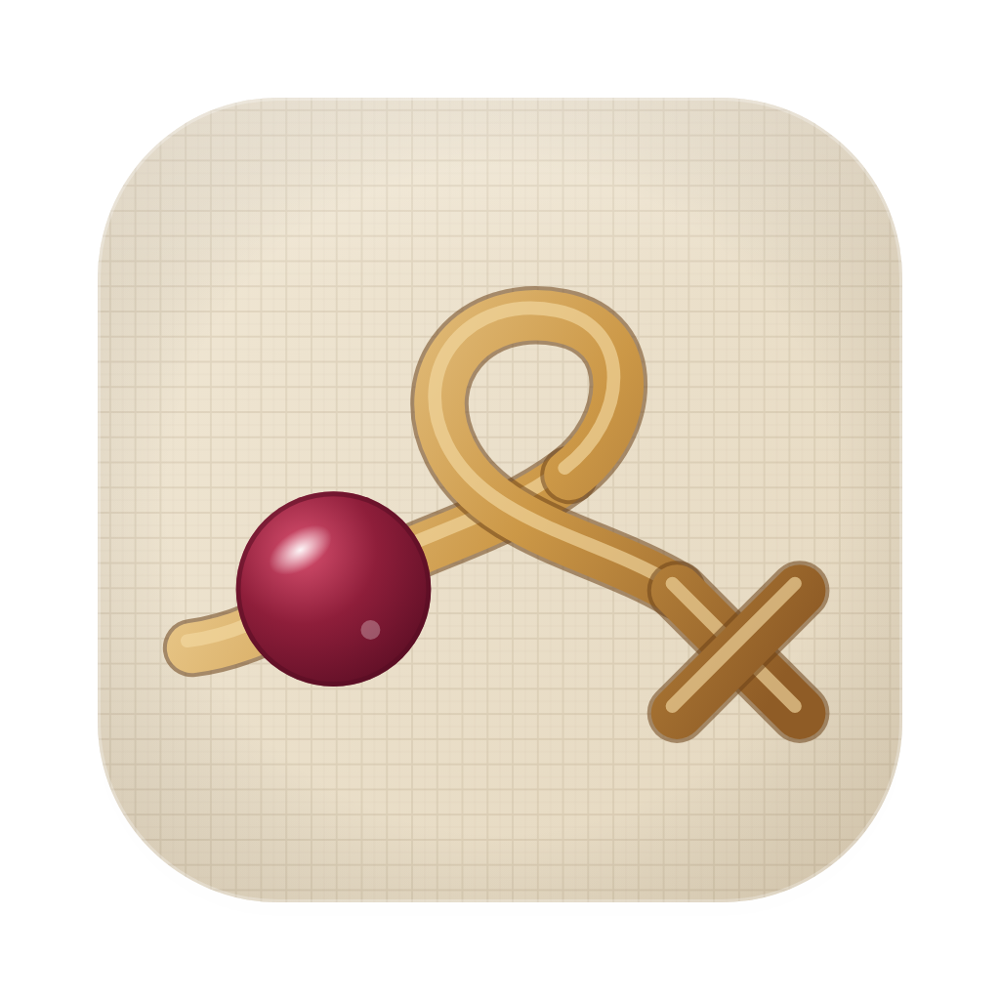
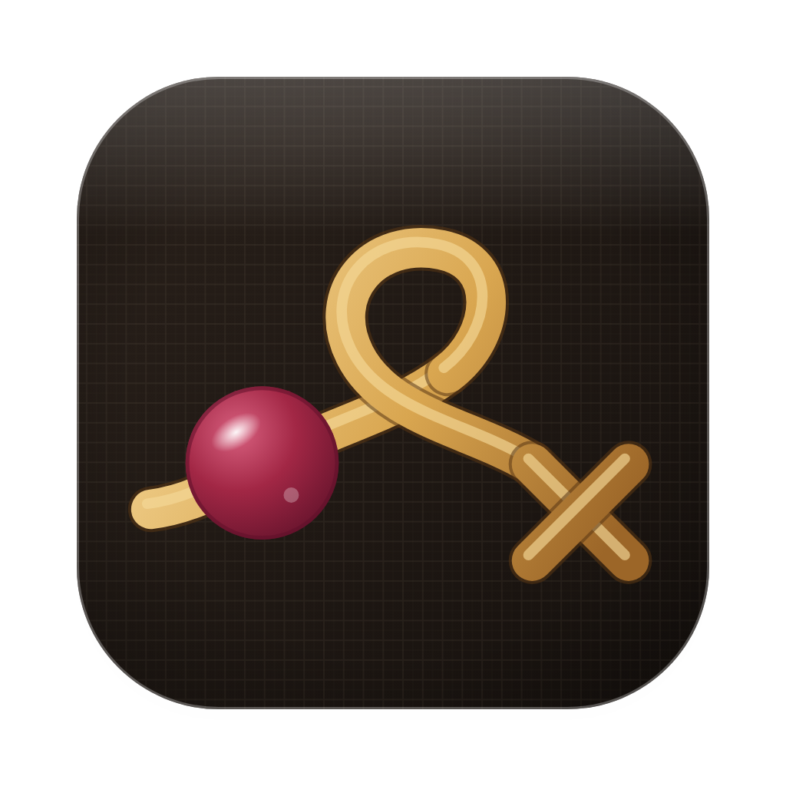
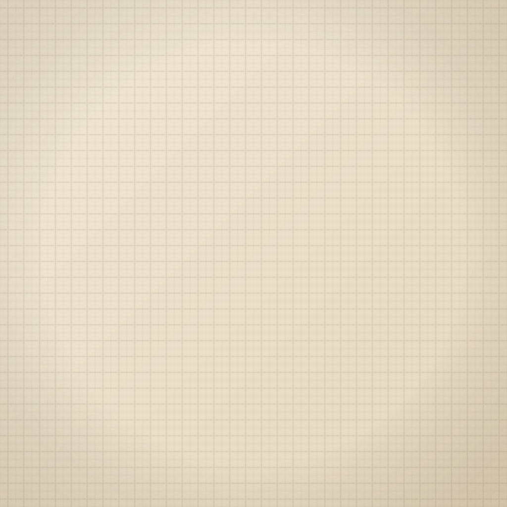
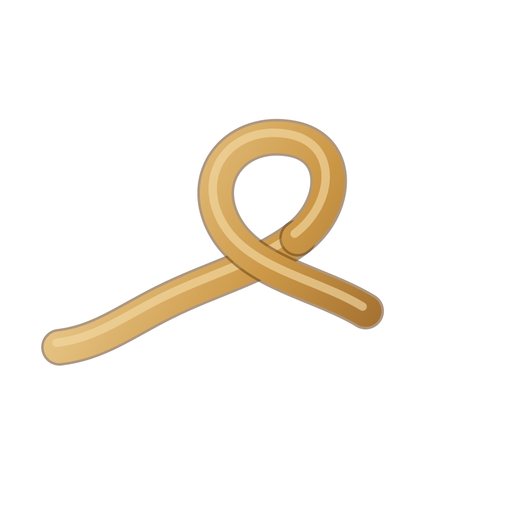
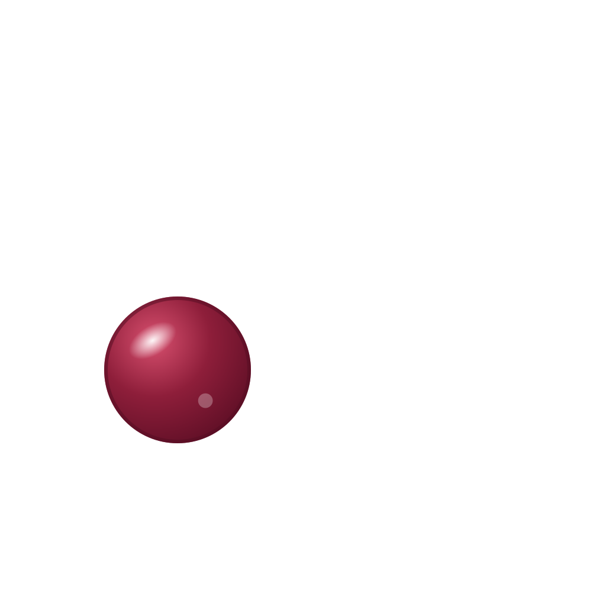
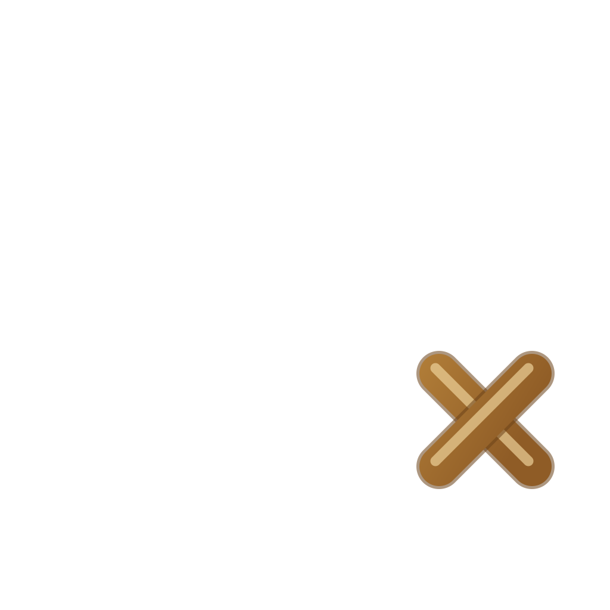

Иконка приложения, версия 1. Одна непрерывная нить: нанизанная гранатовая бусина, мягкий виток («канитель») и один чёткий крестик в конце. Бисер и вышивка здесь поровну: слева бусина, справа крестик, между ними тянется сама нить.
Квадраты 1024 × 1024 без собственной маски (на iOS её накладывает система, здесь показано с маской). macOS: скруглённый квадрат macOS 26 с полями по сетке Apple (тело 824 × 824, поля 100 pt) и прозрачными углами.

png/ios-light.png
png/ios-dark.png
png/ios-tinted.png
png/macos-light.png
png/macos-dark.pngЧетыре слоя на одинаковом холсте 1024 × 1024: фон, нить, бусина, крестик. Нить и крестик одного металла, у нити виток ложится поверх собственного начала (перекрест с тенью, поэтому нить одним слоем). Такие же наборы лежат в layers/dark/ и layers/tinted/. Для tinted разработке достаточно слоёв светлого/тёмного набора: система окрашивает по яркости, но серые слои даны, чтобы форма читалась без цвета.

layers/light/background.svg
layers/light/thread.svg
layers/light/bead.svg
layers/light/cross.svgИконка в реальном размере (около 60 pt) среди обычных значков: светлый, тёмный и tinted режимы (в tinted система окрашивает серую иконку в цвет пользователя, здесь тёплый).
Иконка macOS в Dock с подписью «Канитель», светлый и тёмный режимы.
iOS: 29 pt (Настройки), 40 pt (Spotlight), 60 pt (главный экран); Mac: 16 и 32 px. На 29 pt читаются бусина, виток и крестик; на 16 px остаются два акцента (бусина и крестик) и общий силуэт нити, детали фона и блики пропадают, как и должно быть.
Нить проходит через ячейки сетки (канва): в одних бусины, в последней крестик. Основным остаётся завиток нити: у него больше характера и он лучше читается мелко, у сетки больше «канвы», но линии сетки пропадают на 29 pt.
| Элемент | Значения | Заметка |
|---|---|---|
| Фон светлый (лён) | #F1E8D6 → #E4D7BE | bg1/bg2 светлой |
| Фон тёмный | #2A211B → #15100D | bg1/bg2 тёмной |
| Фон tinted | #1B1B1B → #0C0C0C | серый |
| Нить светлая: блик / металл / тень / кромка | #F3D9A2 / #CC9847 / #8F5C26 / #6B4118 | латунь, тёплая |
| Нить тёмная: блик / металл / тень / кромка | #F5D898 / #D9A650 / #9C6628 / #5A3714 | чуть ярче на тёмном |
| Нить tinted: блик / металл / тень / кромка | #FFFFFF / #E3E3E3 / #A9A9A9 / #5C5C5C | яркость передаёт форму |
| Бусина светлая: свет / основа / глубина | #D8506F / #8E1E3A / #560C22 | гранат |
| Бусина тёмная: свет / основа / глубина | #D8607F / #A22745 / #5E1129 | гранат, чуть светлее |
| Бусина tinted: свет / основа / глубина | #B8B8B8 / #7A7A7A / #3A3A3A | средний серый, темнее нити |
| Крестик (все виды) | тот же металл, что у нити | цвета нити |